Corsi e workshop di ceramica a Torino e dintorni
Corsi di ceramica, tornio, modellazione, decorazione e kintsugi a Torino, Cuneo e dintorni: date, prezzi e come iscriversi.
Cerca tutti i workshop60 attività in programma · aggiornato il 27 ottobre 2026
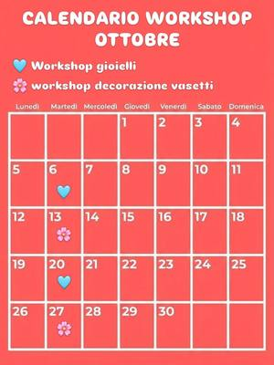
mar27ottCeramicaWorkshop di ceramica: decorare un vasettomartedì 27 ottobre, 18:00–19:00San Salvario (TO) · 30 €con Studio Biscotto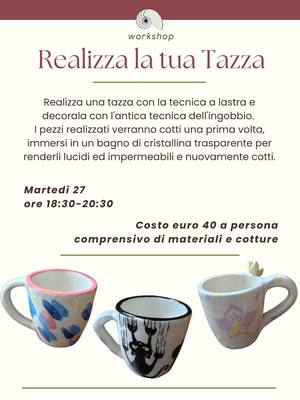
mar27ottCeramicaRealizza la tua Tazza: lastra e ingobbiomartedì 27 ottobre, 18:30–20:30Vanchiglia (TO) · 40 €con Il Nicchio di via Monti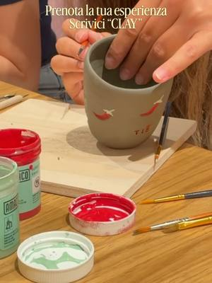
gio29ottCeramicaClay & Chill: serata con l’argillagiovedì 29 ottobreTorinocon Limaco’s Lab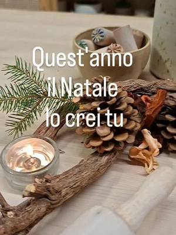
gio29ottCeramicaOfficina del Natale: decori in argillagiovedì 29 ottobre, 16:00–21:00Torino · 20 € all’oracon Spazio IAIA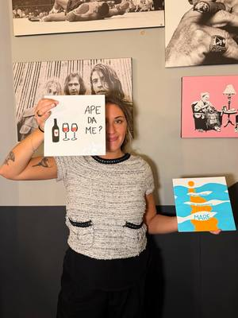
gio29ottCeramicaColora & Gusta: ceramica e pizzagiovedì 29 ottobre, 20:00–22:30San Salvario (TO) · 39 €con Aperi Pods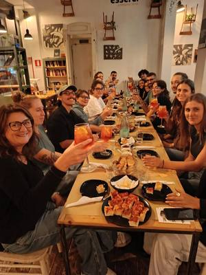
ven30ottCeramicaAperipottery: argilla e aperitivovenerdì 30 ottobre, 18:30–20:30San Salvario (TO) · 55 €con Pottery Lab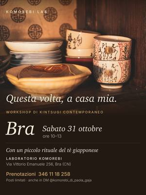
sab31ottCeramicaKintsugi e tè: riparare con l’orosabato 31 ottobre, 10:00–13:00Bra (CN)con Komorebi Lab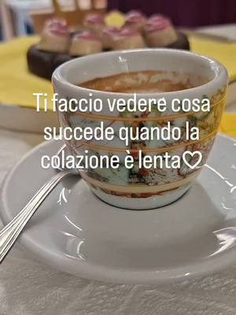
sab31ottCeramicaCoffee and Pottery: colazione e ceramicasabato 31 ottobre, 10:00–12:00Torino · 25 €con Spazio IAIA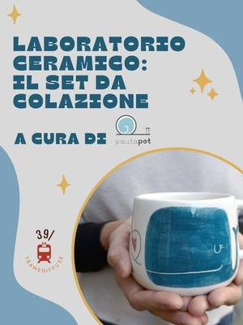
sab31ottCeramicaLaboratorio di ceramica: set da colazionesabato 31 ottobre, 14:00–18:00Pinerolo (TO) · 55 €con Pauta Pot per 39/ Tramediffuse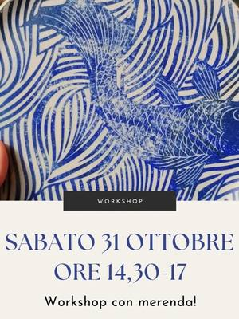
sab31ottCeramicaWorkshop di ceramica: carta giapponesesabato 31 ottobre, 14:30–17:00Vanchiglietta (TO)con QB Creazioni- dom1novCeramicaCoffee and Pottery: colazione e ceramicadomenica 1 novembre, 10:00–12:00Torino · 25 €con Spazio IAIA
- dom1novCeramicaDillo in ceramica: quadretti con una frasedomenica 1 novembre, 16:00–19:00Torinocon Spazio IAIA
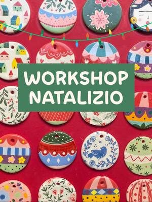
mar3novCeramicaDecorazioni di Natale: ceramiche per l’alberomartedì 3 novembre, 18:00–19:30San Salvario (TO) · 40 €con Studio Biscotto- gio5novCeramicaDecora ceramica: pittura liberagiovedì 5 novembre, 16:00–21:00Torinocon Spazio IAIA
- ven6novCeramicaSpritz and Pottery: aperitivo e ceramicavenerdì 6 novembre, 18:30–21:00Torinocon Spazio IAIA
- dal7novCeramicaCorso di ceramica del sabato: 5 incontrida sabato 7 novembre, ogni sabatoAurora (TO)con Aquarius Ceramica
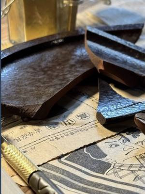
sab7novCeramicaKintsugi contemporaneo: riparare con l’orosabato 7 novembre, 10:00–13:00Torinocon Komorebi Lab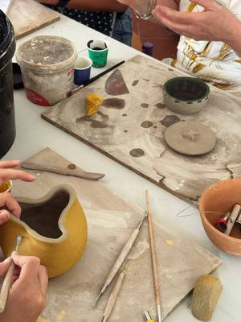
sab7novCeramicaWorkshop di ceramica: set da aperitivosabato 7 novembre, 14:30–18:30Villar Perosa (TO) · 60 € · esauritocon Simona di Terraferma Ceramiche per Riflessi di Casa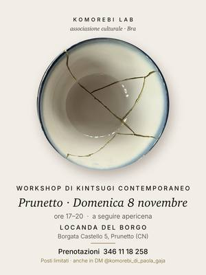
dom8novCeramicaKintsugi e apericena: riparare con l’orodomenica 8 novembre, 17:00–20:00Prunetto (CN)con Komorebi Lab- mar10novCeramicaDecorazioni di Natale: ceramiche per l’alberomartedì 10 novembre, 18:00–19:30San Salvario (TO) · 40 €con Studio Biscotto
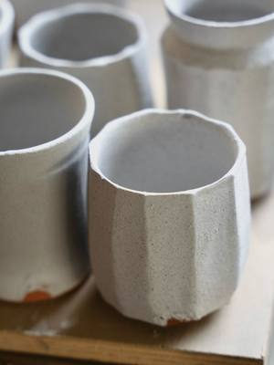
dal11novCeramicaCorso di ceramica: dal disegno all’argillada mercoledì 11 novembre a mercoledì 16 dicembre, ogni mercoledì, 18:30–20:30Cuneo (CN) · 180 € per 6 lezionicon Mario Ghibaudo per Atelier Crea-Arti- gio12novCeramicaDecora ceramica: pittura liberagiovedì 12 novembre, 16:00–21:00Torinocon Spazio IAIA
- ven13novCeramicaSpritz and Pottery: aperitivo e ceramicavenerdì 13 novembre, 18:30–21:00Torinocon Spazio IAIA
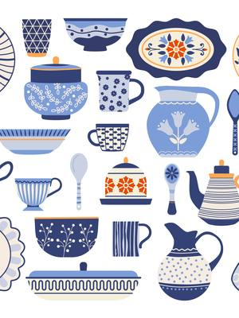
sab14novCeramicaDare Forma: ceramica e psicoterapiasabato 14 novembre, 09:30–11:30San Salvario (TO)con Pottery Lab con Stefania Barbagallo e Marta Pais- sab14novCeramicaCrea la tua ghirlanda: gres a lastrasabato 14 novembre, 10:00–12:30Torinocon Laros per Spazio IAIA
- dom15novCeramicaCoffee and Pottery: colazione e ceramicadomenica 15 novembre, 10:00–12:00Torino · 25 €con Spazio IAIA
- dom15novCeramicaDecorazioni di Natale: ceramiche per l’alberodomenica 15 novembre, 10:30–12:00San Salvario (TO) · 40 €con Studio Biscotto
- dom15novCeramicaDecora il tuo Natale: ceramiche nataliziedomenica 15 novembre, 13:30–15:30San Salvario (TO) · 25 €con Pottery Lab
- dom15novCeramicaOfficina del Natale: decorazioni in ceramicadomenica 15 novembre, 16:00–22:00Torino · 20 € all’oracon Spazio IAIA
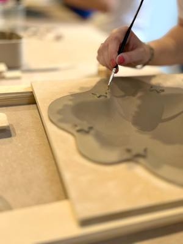
lun16novCeramicaCrea il tuo piatto: ciotole e svuotataschelunedì 16 novembre, 18:00–20:00San Salvario (TO) · 48 €con Pottery Lab con Roberta- dal17novCeramicaCorso di ceramica: tornio o modellatoda martedì 17 novembreAurora (TO) · 100 € per 4 incontricon Aquarius Ceramica
 mer18novCeramicaColora & Gusta: ceramica e pizzamercoledì 18 novembreSan Salvario (TO) · 39 €con Aperi Pods
mer18novCeramicaColora & Gusta: ceramica e pizzamercoledì 18 novembreSan Salvario (TO) · 39 €con Aperi Pods- gio19novCeramicaOracle pottery: carte oracolo e amuletogiovedì 19 novembre, 19:00–21:00Torinocon Paola Zotta per Spazio IAIA
- ven20novCeramicaSpritz and Pottery: aperitivo e ceramicavenerdì 20 novembre, 18:30–21:00Torinocon Spazio IAIA
- sab21novCeramicaColazione e ceramica: mattina in laboratoriosabato 21 novembreManta (CN) · 60 €con Laboratorio di Ceramica a Manta
 sab21novCeramicaTillandsia: vasi sospesi in ceramicasabato 21 novembre, 16:00–18:00San Salvario (TO) · 48 €con Pottery Lab
sab21novCeramicaTillandsia: vasi sospesi in ceramicasabato 21 novembre, 16:00–18:00San Salvario (TO) · 48 €con Pottery Lab- gio26novCeramicaDecora ceramica: pittura liberagiovedì 26 novembre, 16:00–21:00Torinocon Spazio IAIA
- ven27novCeramicaAperitivo e ceramica: serata in laboratoriovenerdì 27 novembreManta (CN) · 60 €con Laboratorio di Ceramica a Manta
- ven27novCeramicaSpritz and Pottery: aperitivo e ceramicavenerdì 27 novembre, 18:30–21:00Torinocon Spazio IAIA
- sab28novCeramicaColazione e ceramica: mattina in laboratoriosabato 28 novembreManta (CN) · 60 €con Laboratorio di Ceramica a Manta
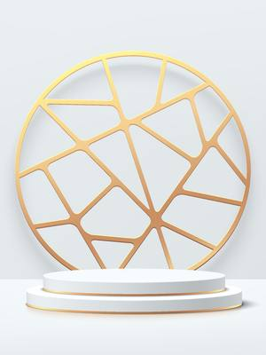
sab28novCeramicaEsperienza Kintsugi: riparare con l’orosabato 28 novembre, 14:30–18:30San Salvario (TO) · 120 €con Pottery Lab con Diletta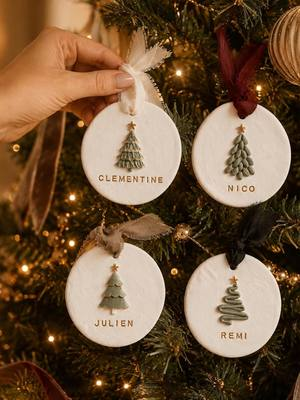
sab28novCeramicaWorkshop di ceramica: addobbi di Natalesabato 28 novembre, 14:30–18:30Villar Perosa (TO) · 60 €con Simona di Terraferma Ceramiche per Riflessi di Casa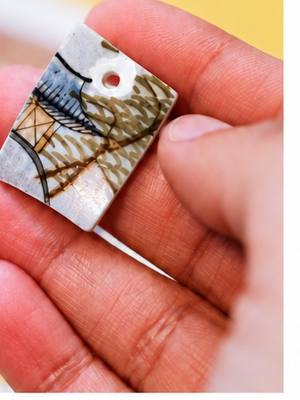
dom29novCeramicaWorkshop di gioielli: kintsugi su ceramicadomenica 29 novembre, 11:00–13:00Santa Rita (TO)con Hanami Design per Anima Atelier- dom29novCeramicaOfficina del Natale: decorazioni in ceramicadomenica 29 novembre, 16:00–22:00Torino · 20 € all’oracon Spazio IAIA
- ven4dicCeramicaAperitivo e ceramica: serata di Natalevenerdì 4 dicembreManta (CN) · 60 €con Laboratorio di Ceramica a Manta
- datada confermareAltroCascina Roccafranca: corsi della stagioneData da confermareMirafiori (TO)con Cascina Roccafranca
- dataa sceltaCeramicaLezioni di ceramica: al tuo ritmoData a sceltaManta (CN) · 125 € per 4 lezionicon Laboratorio di Ceramica a Manta
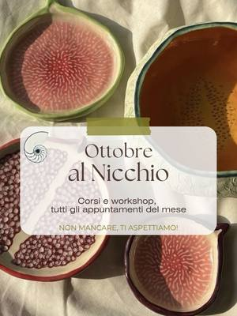
dataa sceltaCeramicaCorso di ceramica: modellazione e smaltiData a sceltaVanchiglia (TO) · 120 € per 4 lezionicon Il Nicchio di via Monti- dataa sceltaCeramicaCorso di tornio: lezioni per dueData a sceltaVanchiglia (TO) · 45 € a lezionecon Il Nicchio di via Monti
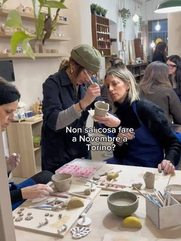
datada confermareCeramicaWorkshop di ceramica: modellazione ed engobbiData da confermareQuadrilatero (TO) · 50 € · esauritocon Ouimiel Studio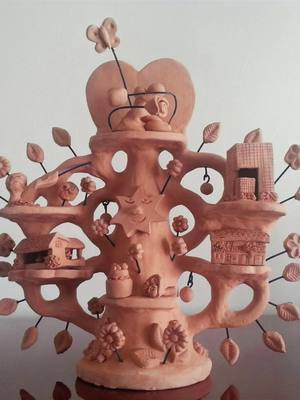
dataa sceltaCeramicaL’albero della vita: scultura in terracottaData a sceltaSan Salvario (TO) · 95 €con Pottery Lab con Marta Pais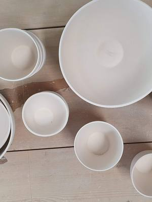
dataa sceltaCeramicaLaboratorio libero: ceramica in autonomiaData a sceltaSan Salvario (TO) · 50 € per 10 orecon Pottery Lab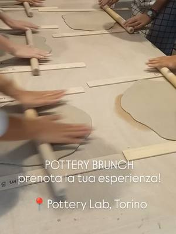
dataa sceltaCeramicaCorso di modellazione: lastra e colombinoOgni settimana, in più turniSan Salvario (TO) · 150 € per 4 lezionicon Pottery Lab- dataa sceltaCeramicaCorso di tornio: quattro incontriOgni martedì, mercoledì, giovedì o sabatoSan Salvario (TO) · 150 € per 4 lezionicon Pottery Lab con Roberta Dalpasso
 dataa sceltaCeramicaCorso di decorazione: ceramica dipintaData a sceltaCit Turin (TO)con Scialabà
dataa sceltaCeramicaCorso di decorazione: ceramica dipintaData a sceltaCit Turin (TO)con Scialabà dataa sceltaCeramicaCorso di gioielli: porcellana e argillaData a sceltaCit Turin (TO) · 125 €con Scialabà
dataa sceltaCeramicaCorso di gioielli: porcellana e argillaData a sceltaCit Turin (TO) · 125 €con Scialabà- dataa sceltaCeramicaCorso di ceramica: lastra e tornioData a sceltaCit Turin (TO) · 120 €con Scialabà
- dataa sceltaCeramicaCorso di tornio: centratura e formeData a sceltaCit Turin (TO) · 120 €con Scialabà
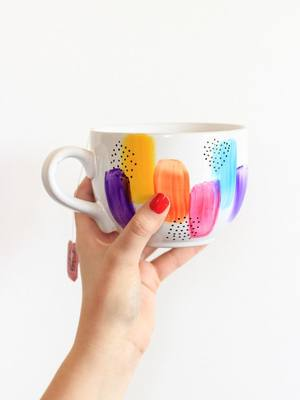
ognigioCeramicaIl tè delle cinque: decora una tazzaOgni giovedì, 17:00–18:30San Salvario (TO) · 25 €con Pottery Lab con Diletta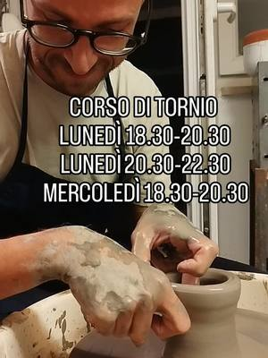
dataa sceltaCeramicaCorso di tornio: ceramica per tutti i livelliOgni lunedì e mercoledì, 18:30–20:30San Donato (TO)con Chu Lab